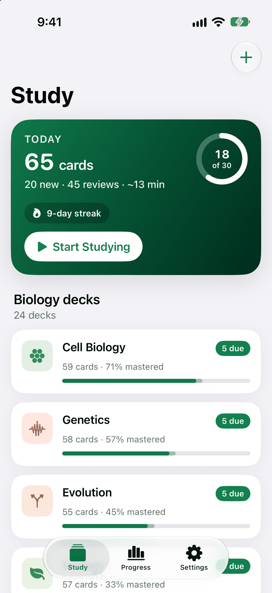
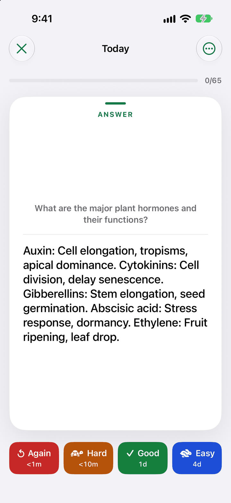
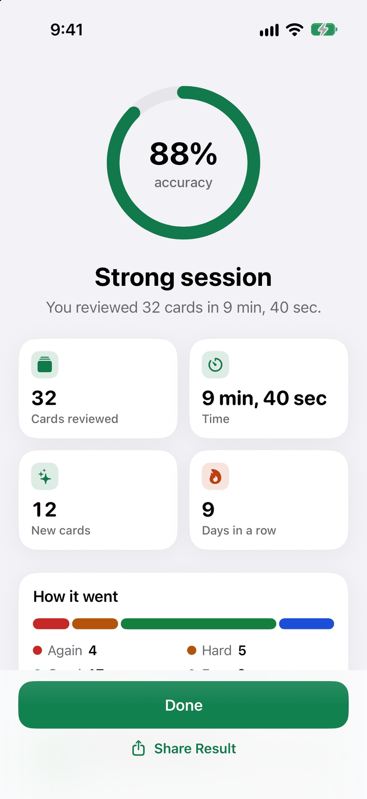
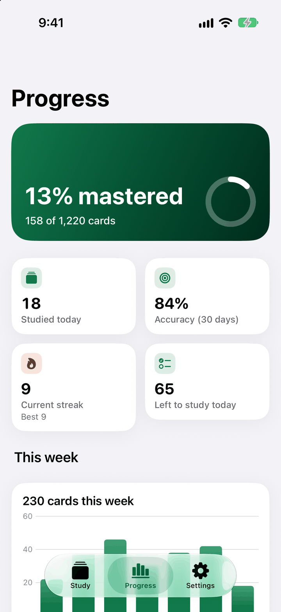
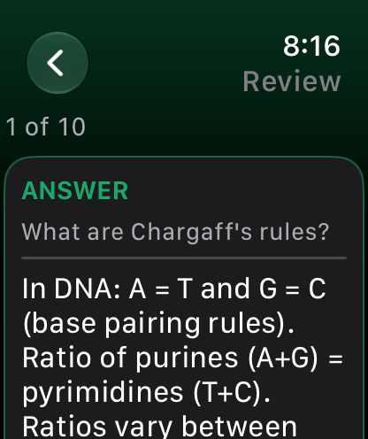

Today, at a glance
Today shows the cards that are due, a few new ones, your streak and your daily goal. Flip a card, rate it, move on. Switch to quiz mode when you want to.
BioRecall
1,220 carefully written biology cards in 24 decks, with spaced repetition that schedules every review for you.
iPhone · iPad · Mac · Apple Watch
Cell Biology
Try a real BioRecall card: tap it, then rate it.
The film
A short narrated tour of the app.
Spaced repetition
Flip a card, rate it Again, Hard, Good or Easy, and BioRecall keeps the schedule for you.
Read the question and answer it in your head before you flip the card.
Tell the app how it went. Honest ratings make a better schedule.
Open Today and the cards that are due are waiting, with a few new ones and your daily goal.
A closer look
From the plan for today to the progress you have made. Every screen here is the real app.




The library
Carefully written for AP Biology, introductory college biology, MCAT biology review and pre-med students. Every deck is on your device from the first launch, and you can add your own.
59 cards
Cell structure, organelles, membrane transport, and the cell cycle
58 cards
DNA, RNA, protein synthesis, inheritance patterns, and mutations
55 cards
Natural selection, speciation, evidence for evolution, and macroevolution
57 cards
Ecosystems, populations, communities, biomes, and conservation
56 cards
Body systems, organs, tissues, and physiology
57 cards
Innate and adaptive immunity, antibodies, vaccines, and immune disorders
62 cards
DNA replication, transcription, translation, and gene regulation
53 cards
Neurons, synapses, the brain, sensory systems, and neural signaling
51 cards
Plant structure, photosynthesis, transport, and reproduction
50 cards
Bacteria, viruses, fungi, protists, and infectious disease
58 cards
Metabolism, enzymes, proteins, lipids, carbohydrates, and energy
50 cards
Virus structure, replication, pathogenesis, and viral diseases
48 cards
Hormones, glands, feedback loops, and endocrine regulation
49 cards
Heart anatomy, blood vessels, circulation, and cardiac physiology
40 cards
Lungs, gas exchange, breathing mechanics, and respiratory control
39 cards
Digestion, absorption, accessory organs, and nutrient processing
45 cards
Reproductive systems, gametogenesis, fertilization, and pregnancy
54 cards
Embryogenesis, cell differentiation, morphogenesis, and growth
50 cards
Tissue types, cellular organization, and microscopic anatomy
54 cards
Animal classification, anatomy, behavior, and physiology
42 cards
Ocean ecosystems, marine organisms, and aquatic adaptations
50 cards
Parasites, hosts, life cycles, and parasitic diseases
44 cards
Genetic engineering, cloning, CRISPR, and applied biology
39 cards
Sequence analysis, genomics, databases, and computational biology
Features
Today shows the cards that are due, a few new ones, your streak and your daily goal. Flip a card, rate it, move on. Switch to quiz mode when you want to.
A summary after every session, mastery for each deck, streaks and a study heatmap in the Progress tab.
Create and edit decks, or import cards from a CSV file and export them again. Optional AI card generation with your own OpenAI or Anthropic API key: you review every card before it is added.
front,back
"What does ATP stand for?","Adenosine triphosphate"One daily study reminder at a time you choose, and a System, Light or Dark appearance to match your device.
All 1,220 cards are stored on your device. You only need a connection to buy or restore a purchase and for optional AI card generation with your own API key.
Apple Watch
Review due cards on Apple Watch; results sync back to your iPhone. Open BioRecall on your iPhone to send due cards to the watch, then flip and rate them anywhere. The watch works offline once it has synced.

iPad and Mac
A sidebar layout on iPad and Mac. On Mac, press Space to flip a card and 1 to 4 to rate it. One subscription unlocks iPhone, iPad and Mac. Progress is stored on each device.
Pricing
One purchase unlocks iPhone, iPad and Mac.
$9.99 / month
7 days free, then $9.99 every month until you cancel.
Best value: save 49%
$59.99 / year
7 days free, then $59.99 every year. That is about $5.00 a month, 49% less than paying monthly.
$99.99 once
Pay once. No subscription and nothing to renew.
Monthly and yearly plans start with 7 days free for new subscribers. Cancel at least 24 hours before the trial ends and you will not be charged. Otherwise the plan renews automatically at the price shown until you cancel.
Prices are in US dollars; the App Store shows the price in your currency. Payment is charged to your Apple Account. Subscriptions renew automatically unless cancelled at least 24 hours before the end of the current period, and you can manage or cancel them in your Apple Account settings. Restore Purchases is available in the app. One purchase unlocks the app on iPhone, iPad and Mac signed in with the same Apple Account; study progress is stored separately on each device.
Something else? Email shankarduttsgd@gmail.com.
Yes. Monthly and yearly plans start with a 7-day free trial for new subscribers. Cancel at least 24 hours before it ends and you will not be charged. Lifetime is a one-time purchase without a trial.
No. BioRecall is a paid app, and you choose a plan when you first open it. The free trial on monthly and yearly lets you use everything before you pay.
BioRecall is built for AP Biology, introductory college biology, MCAT biology review and pre-med students. It covers Cell Biology, Genetics, Evolution, Ecology, Human Anatomy, Immunology, Molecular Biology and Neurobiology, among 24 decks in total. AP® is a trademark registered by the College Board; MCAT® is a registered trademark of the Association of American Medical Colleges. These organizations are not affiliated with, and do not endorse, BioRecall.
No. One purchase unlocks BioRecall on iPhone, iPad and Mac with the same Apple Account, but study progress is stored separately on each device. The Apple Watch app is the exception: reviews you do on the watch are sent back to your iPhone.
It lets you review the cards that are due on your iPhone. Open BioRecall on your iPhone to send due cards to the watch. You can then flip and rate them on your wrist, even offline, and your ratings sync back to your iPhone.
Yes. Create your own decks and cards, or import them from a CSV file with front and back columns. You can export decks as CSV as well.
No. AI card generation is optional. If you want it, add your own OpenAI or Anthropic API key in Settings. When you tap Generate, the app drafts cards for that deck and you review them before they are added. The provider bills any API usage to your own account.
Yes. All 1,220 cards are stored on your device. You only need a connection to buy or restore a purchase and to use optional AI card generation with your own OpenAI or Anthropic API key.
On iPhone or iPad, open Settings, tap your name, then Subscriptions, and choose BioRecall. On Mac, open the App Store, click your name, then Account Settings, and manage Subscriptions. Apple handles billing and cancellation.
BioRecall for iPhone, iPad and Mac, with an Apple Watch app for reviews on the go.
iPhone · iPad · Mac · Apple Watch